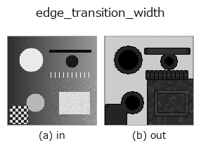

edges op• Data kinds: image → image
• Call: fullseye.apply(img, "edge_transition_width", a=0.5, b=0.5) (2-D model = एक image + दो scalar knobs a,b∈[0,1])

*Figure synthetic 128×128 input पर सच में चलाकर मिला output है। बाईं ओर input, दाईं ओर output। Point clouds ऊपर से देखे गए scatter के रूप में (brightness = z), 1-D series line के रूप में, volumes z दिशा में maximum-intensity projection के रूप में, videos बीच के frame के रूप में, complex images amplitude के रूप में, और जो return values चित्र नहीं बन सकते वे स्वयं values के रूप में दिखाए जाते हैं।*
Knob a को बदलकर (0.1 / 0.5 / 0.9, दूसरा knob default पर):
▸ edge_transition_width: knob a को बदलने का figure (docs site)
Knob b को बदलकर (0.1 / 0.5 / 0.9, दूसरा knob default पर):
▸ edge_transition_width: knob b को बदलने का figure (docs site)
दूसरी images पर भी (synthetic scene / photo / coins। ऊपर की row में inputs, नीचे की row में उनके outputs। Knobs default पर):
▸ edge_transition_width: दूसरी images पर output (docs site)
*चौथा column colour (H,W,3) input है। यह op channels को पार किए बिना colour संभालता है (colour channel को तीसरे spatial axis की तरह convolve नहीं करता)।*
Edge की transition width (= उस जगह के effective PSF का फैलाव) को pixel इकाई में मापता है।
a माप window की भुजा की लंबाई को 3,5,7,9 पर sweep करता है (_k(a))। b amplitude और gradient के लिए estimator चुनता है: b <= 0.5 window के भीतर max − min उपयोग करता है (सरल और तीखा, लेकिन outliers के प्रति कमज़ोर), b > 0.5 quantiles उपयोग करता है, और b जितना ऊँचा, quantiles उतने 90/10 से 60/40 की ओर खिसकते हैं, noise के प्रति कम संवेदनशील होते हुए (और उसी अनुपात में steps गोल हो जाते हैं = यह एक trade-off है)।
चौड़ाई ≒ स्थानीय amplitude ÷ स्थानीय अधिकतम gradient। अगर step 1 pixel के भीतर उठता है तो चौड़ाई लगभग 1; अगर धुंधला होकर 5 pixels में उठता है तो लगभग 5। यह simulate_defocus का प्रतिरूप है, जो blur बनाता है; यह op उसे मापने वाला पक्ष है। Focus का निर्णय, motion blur की मात्रा, resolution सीमा और यह तय करने के लिए उपयोगी कि text पढ़ने लायक बड़ा है या नहीं।
अगर window transition से संकरी है, तो चौड़ाई कम आँकी जाती है (क्योंकि पूरा amplitude window में नहीं समाता)। व्यावहारिक नियम: अगर आउटपुट 0.7 से ज़्यादा है, तो a बढ़ाकर फिर से मापें।
Normalisation प्रति image नहीं है (यह केवल window की स्थिर भुजा से भाग देता है), इसलिए मान images के बीच तुलनीय हैं। आउटपुट 1.0 का अर्थ है "transition की चौड़ाई window के बराबर है = यह window से चौड़ी हो सकती है और पूरी नहीं मापी गई", और यह a बढ़ाकर फिर से मापने का संकेत है। समतल हिस्से और बिना edge वाली जगहें 0 देती हैं।
★खाली frame पर सब 0 लौटाता है ("कोई edge नहीं")। अगर floor केवल image के अपने amplitude के सापेक्ष मात्रा के रूप में तय हो, तो uniform image पर संदर्भ भी rounding की धूल बन जाता है और धूल से धूल का अनुपात structure बन जाता है —— मापा गया: 1e-12 noise जोड़ी गई एक सपाट 0.5 image ने 3.49 की चौड़ाई लौटाई (= window का आधा)। हम स्पष्ट रूप से कहते हैं कि जिस image का amplitude ही absolute floor 1e-6 तक नहीं पहुँचता उसमें कोई edge नहीं है। Border handling scipy.ndimage का default reflect है। अंदर कोई step नहीं है जो 8 bit पर गिरता हो।
• gallery2d_edges family guide
• Sample data catalog (DL URL / license) — 2-D के लिए skimage.data (BSD/public) + synthetic, 3-D के लिए real data sources (Stanford/PDS आदि) के DL URL।
• Operators का स्रोत और संदर्भ — इस op family के मूल research/methods के स्रोत।
• Algorithm का मानक स्रोत (लेखक, वर्ष) और उपयोग ऊपर की family usage guide में दिए गए हैं।
नीचे का program सच में चलता है, यह जाँचा गया है (figure वाला ही input)। Studio की help में यह block buttons बन जाता है, जिनसे इसे वहीं load करके चलाया जा सकता है।
edge_transition_width 0.40 0.50
▸ यह pipeline load करें · Load करके चलाएँ
• gallery2d_edges — py -3.11 examples/gallery2d_edges.py
image को input के रूप में लेते हैं)identity · gaussian · mean_box · bilateral · unsharp · median · min_filter · max_filter
edges)sobel_mag · prewitt_mag · roberts_mag · dog · grad_dir · log · corner_response · sk_scharr
*Provenance: ops.py — 2D operator registry. यह per-op note tools/opdocs.py md से अपने-आप generate होता है (हाथ से edit न करें)।*
© 2026 Kazufumi Furuse — Fullseye operator documentation. Licensed under Apache-2.0.